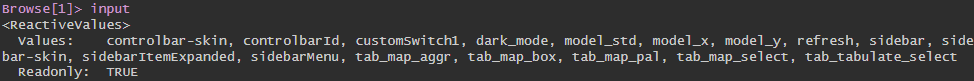

profvis({runApp()})การนำแอปไปใช้งาน
ในหัวข้อนี้เราจะเรียนรู้:
- ทดสอบประสิทธิภาพของapp
- การบันทึกล็อกในแอป Shiny และการแก้ไขข้อบกพร่อง
- นำแอปไปใช้บนแพลตฟอร์มของ Shiny
การนำแอปไปใช้
- เมื่อรันแอป Shiny ด้วย
runApp()นั่นหมายความว่าเราวางแอปไว้ที่เครื่องที่เราใช้งานหรือเครื่องที่อยู่ในเครือข่ายของเรา - การนำแอป Shiny ไปใช้หมายถึงการทำให้แอปพร้อมให้ผู้ใช้งานหรือเข้าถึงได้
- การนำไปใช้หรือการติดตั้งเป็นขั้นตอนสุดท้ายของการพัฒนาแอป
เสริมศักยภาพของแอป
- ก่อนที่จะถึงเวลาที่จะนำแอปไปใช้ควรที่จะตรวจสอบให้แน่ใจว่าแอปของเราผ่านการทดสอบที่ควรจะเป็น
- ขึ้นอยู่กับกรณีการใช้งานและกลุ่มเป้าหมาย เมื่อนำแอปออกไปใช้แล้ว แอปควรมีลักษณะดังนี้:
- เร็ว: การสื่อสารอาจทำให้แอปของเราช้าลง
- สามารถขยายขนาดได้: การทำงานหนักและเยอะอาจทำให้แอปของเราล่ม
- เสถียร: ข้อผิดพลาดอาจทำให้แอปของเราล่มเช่นกัน
เครื่องมือในการเสริมศักยภาพของแอป
- มีหลายส่วนขยาย Shiny ที่ช่วยเสริมศักยภาพของแอป Shiny มากมาย บางส่วนในนั้นเราจะกล่าวถึงดังนี้:
profvis: ทำการสร้างโปรไฟล์สำหรับแอป Shiny และสร้างแสดงผลประสิทธิภาพreactlog: บันทึกความเปลี่ยนแปลงในแอป Shiny และสร้างกราฟการเปลี่ยนแปลงแบบไดนามิกshinyloadtest: จำลองการทำงานของผู้ใช้และกำหนดว่าแอปของเราเหมาะสมกับการทำงานเหล่านี้แค่ไหนshinytest: สร้างภาพรวมและเปรียบเทียบของแอปในการรันshiny::testServer(): ดำเนินการทดสอบserver
แหล่งข้อมูลเพิ่มเติม
การประเมินประสิทธิภาพ
- การประเมินประสิทธิภาพหมายถึงการบันทึกเวลาและหน่วยความจำที่ของการทำงานบางอย่างในแอป Shiny
- มีประโยชน์สำหรับการทดสอบประสิทธิภาพหรือความเร็วของแอป
- การประเมินประสิทธิภาพใน Shiny สามารถทำได้ด้วยแพคเกจ
profvis
การใช้แพคเกจ profvis
- เพียงแค่รันแอปภายในคำสั่ง
profvis::profvis():
Note
มันจำเป็นต้องใช้คำสั่ง runApp() เพียง shinyApp() มันไม่พอ
- ทดลองทำอะไรบางอย่างในแอป
- เปิดแอป จากนั้นจะมีไฟล์ HTMLหนึ่งเที่มีหน้าตาเหมือนด้านล่างนี้ปิดขึ้น:
การแก้ไขบั๊กในแอป Shiny
- การแก้ไขบั๊กในแอป Shiny เป็นความท้าทายอันหนึงที่ไม่เหมือนการแก้ไขโค้ดใน R ปกติ
- การใช้งาน breakpoints เป็นเรื่องwยากและรองรับเฉพาะใน RStudio เท่านั้น
- เราจะแนะนำวิธีการแก้ไขบั๊กในแอป Shiny สามวิธี:
- การแก้ไขแบบโต้ตอบ
- การแก้ไขโดยการพิมพ์ข้อมูล (Print debugging)
- การบันทึกข้อมูลการเกิดสมาธิ (Reactivity logging)
การแก้ไขการโต้ตอบ
- การแก้ไขการโต้ตอบก็เหมือนกับใน R
- เรียก
browser()ไว้ที่ไหนก็ได้ในฟังก์ชันserver - โค้ดจะรันมาถึงจุดที่ใส่
browser()และหยุดอยู่ในสถานะ “แช่แข็ง” ทำให้เราสามารถสำรวจตรวจสอบฟังก์ชันserverได้

input ในการเรียกใช้ browser ใน Shinyการบันทึกข้อมูล (Logging)
- ใน R การพิมพ์ข้อมูลที่สงสัยเพื่อใช้ในการแก้ไขบั๊กก็อาจจะไม่เพียงพอ
- แต่ใน Shiny การพิมพ์ข้อมูลออกมาดูเพื่อแก้ไขบั๊กอาจเป็นวิธีที่ดีที่จะทำให้เข้าใจข้อผิดพลาดที่เกิดขึ้น
อยู่ตรงไหนแล้วเนี้ย
- เป็นคำถามที่เราอาจเองถามตัวเองเมื่อมีข้อผิดพลาดเกิดขึ้น Shiny
- แพคเกจ
whereamiสามารถบอกได้ว่าเราอยู่ที่ไหนในโค้ด - มีแพคเกจ R หลายแพคเกจที่ช่วยบันทึกข้อมูลทั่วไป (
logging,logger,log4r) แต่whereamiนี่เหมาะกับ Shiny มาก

loggerwhereamiการบันทึกการโต้ตอบ (Reactivity logging)
- Reactivity logging หมายถึงการบันทึกและแสดงการโต้ตอบที่เกิดขึ้นในแอป Shiny
- มีประโยชน์ในการตรวจจับการโต้ตอบที่เกิดขึ้นมากเกินไปและความไม่เสถียร
- Reactivity logging สามารถทำได้โดยใช้แพคเกจ
reactlog
การใช้แพคเกจ reactlog
รัน
reactlog::reactlog_enable()ก่อนรันแอป Shiny หรือตั้งค่าoptions(shiny.reactlog = TRUE)ใช้งานนแอป Shiny (โดยเฉพาะส่วนที่มีการโต้ตอบ)
รัน
shiny::reactlogShow()หรือreactlog::reactlog_show()หลังจากปิดแอปหรือถ้ากำลังรันแอป กด
ctrl + F3แทน
การติดตั้ง
- การติดตั้งแอป Shiny ถูกจำกัดไว้ที่เซิร์ฟเวอร์ที่รองรับแอป Shiny
- เราสามารถติดตั้งแอปไว้ที่ Shiny server ที่เซ็ตอัพเองหรือกับที่ผู้ให้บริการเซิร์ฟเวอร์
ติดตั้งที่ไหนดี
| ชื่อ | การใช้งาน | ความต้องการ |
|---|---|---|
| shinyapps.io | แอปที่ใช้งานเป็นประจำถึงมืออาชีพ | แพคเกจ rsconnect |
| Posit Connect | แอปที่ใช้งานในธุรกิจระดับมืออาชีพถึงองค์กร | แพคเกจ rsconnect |
| Shiny Server | การตั้งค่าเซิร์ฟเวอร์ Shiny ที่ติดตั้งเอง | Shiny Server บนเซิร์ฟเวอร์ Linux |
| ShinyProxy / Heroku | การติดตั้งแอปที่อยู่ในคอนเทนเนอร์ | Docker |
shinyapps.io
- shinyapps.io เป็นตัวเลือกที่พบบ่อยสำหรับแอป Shiny ที่เหมาะสำหรับการใช้งานทั่วไป
- ไม่ต้องใช้ความรู้ทางเทคนิคมากนักในการติดตั้ง
- ไม่ต้องมีคอมพิวเตอร์พร้อมอยู่ก่อน (เช่นเซิร์ฟเวอร์)
- ใช้ได้ฟรี

rsconnect
- สำหรับ Posit Connect และ shinyapps.io เราต้องใช้แพคเกจ
rsconnect rsconnectช่วยเป็นตัวกลางในการสื่อสารระหว่างบริการของ Posit และ R
rsconnectถูกสร้างขึ้นจากdeployApp(),deployAPI()และdeployDoc()ซึ่งเป็นฟังก์ชันที่มีในrsconnect
การสร้าง account
- เราจำเป็นต้องมีบัญชีก่อนที่จะสามารถติดตั้งแอปไปยัง Shinyapps ได้
- สามารถสมัครได้โดยใช้บัญชี Google, Github หรือ Clever

เชื่อมต่อ R กับ shinyapps.io
- การเชื่อมต่อจะใช้ Tokens และ Secrets
- บนแดชบอร์ดของ shinyapps ไปที่ Account -> Tokens ในแถบข้าง
- คลิกที่ “Add Token”
- คลิกที่ “Show” ข้างขวาของTokensที่สร้างใหม่
- นำรหัสมาวางในคอนโซลและรัน
rsconnectDeploy!
- เพื่อตรวจสอบว่ากระบวนการยืนยันการเชื่อมต่อเสร็จสมบูรณ์เราจะเรียกใช้งาน:
rsconnect::accounts()- สุดท้ายเพื่อติดตั้งแอป เราเพียงแค่รัน
deployApp()เพื่อให้app.Rในไดเร็กทอรีปัจจุบันไปยังถูกอัพโหลดไปที่ shinyapps.io:
rsconnect::deployApp()